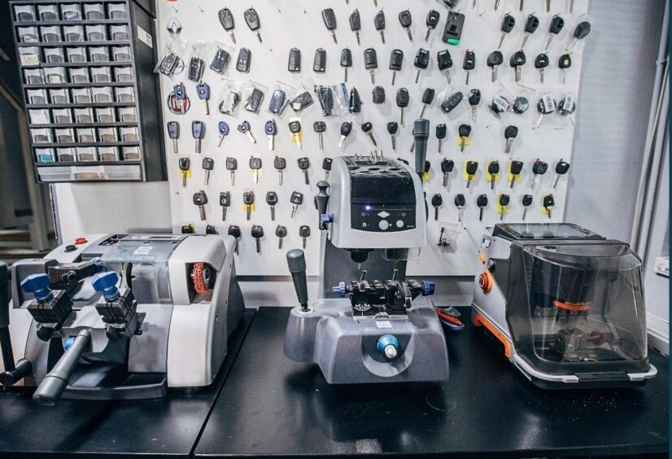
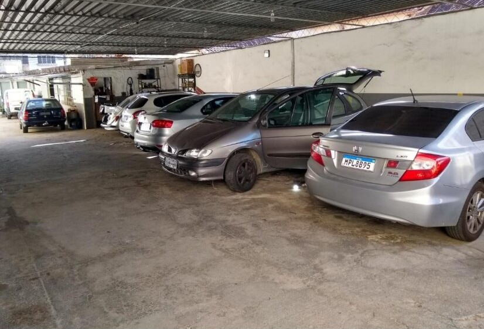
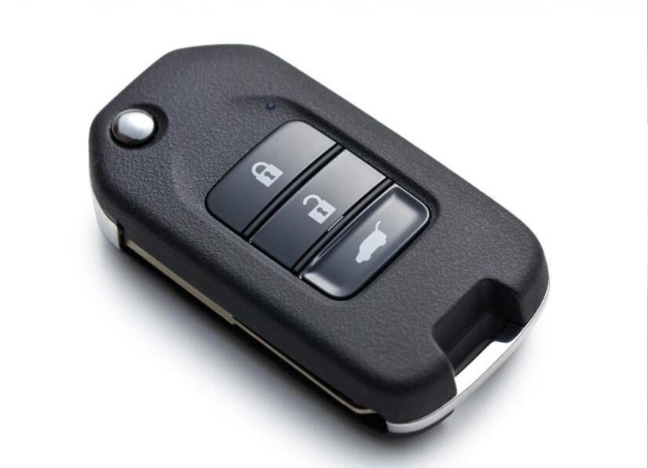
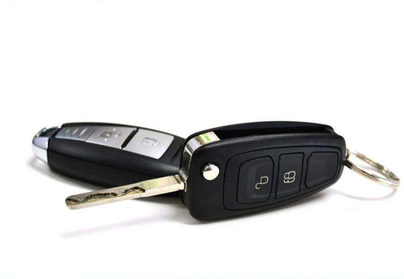
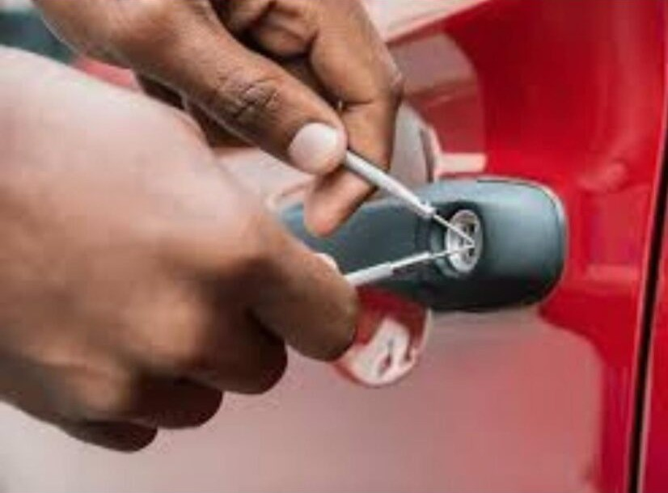
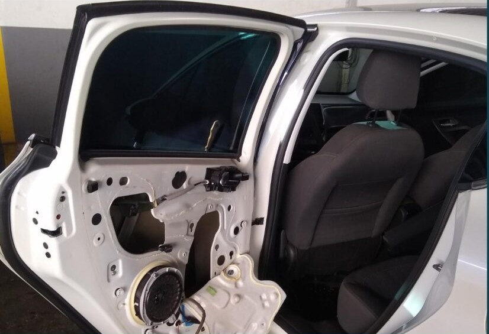
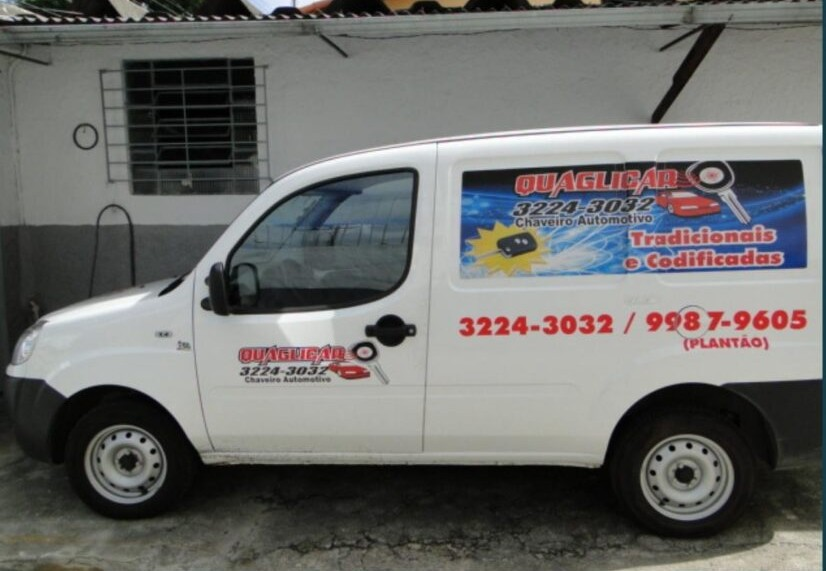

Chave: a peça mais importante do seu carro!
-
Cópia de chave

Precisou fazer uma chave reserva do carro? Cópia feita com agilidade! Trabalhamos com chaves automotivas, tipo Yale, codificadas, pantográficas, chave canivete e muito mais.
-
Estacionamento amplo e privativo

Nosso estacionamento é amplo e privativo para maior comodidade dos nossos clientes.
-
Chave codificada

Perdeu ou está com algum problema na chave do seu carro? Nós confeccionamos outra chave para você!
-
Troca de bateria e reparos

Seu controle não aceita mais seus comandos? Ou não funciona mais? Temos a mão de obra especializada para te atender.
-
Abertura de veículos

Esqueceu a chave dentro do carro? A chave do carro quebrou? Perdeu a chave? Resolvemos seu problema com a agilidade que você precisa!
-
Reparo em vidros, fechaduras e maçanetas

Problemas em acionar o sistema de vidros do seu carro? Algum problema nas fechaduras e maçanetas? Nós podemos te ajudar!
-
Serviço externo

Não consegue chegar até nosso local de atendimento? Nós iremos até você! Veículo equipado para te atender de forma rápida.